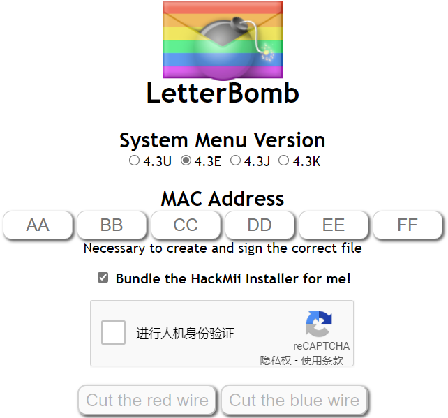
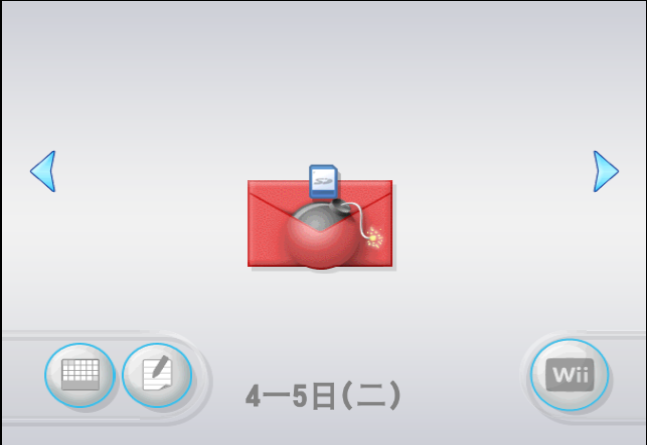

LetterBomb
LetterBomb使用Wii留言板触发漏洞
你需要
- 一张不超过32G的SD卡,并用SD Memory Card Formatter 备用下载 格式化SD卡
- 一台系统版本为4.3的Wii
步骤
- 打开Wii,前往Wii设置-互联网-主机信息,记下MAC地址

- 访问please.hackmii.com,输入系统版本(在Wii设置的右上角)和MAC地址,勾选Bundle the HackMii Installer for me!,完成人机验证,切断任意电线

- 你会得到一个名为LetterBomb.zip的文件,将.txt以外的文件解压到SD卡根目录
- 将SD卡插入Wii
- 打开Wii,点击Wii留言板,您应该会看见一个红色的炸弹信
- 请确保Wii的日期正确
- 请尝试往前或往后翻几天
- 请确保使用小于或等于32G的SD卡
- 请确保选择了正确的系统版本,在Wii设置的右上角查看

- 点击红色的炸弹信
如果不成功，请使用其它漏洞
感谢WiiBrew和Wii Guide!